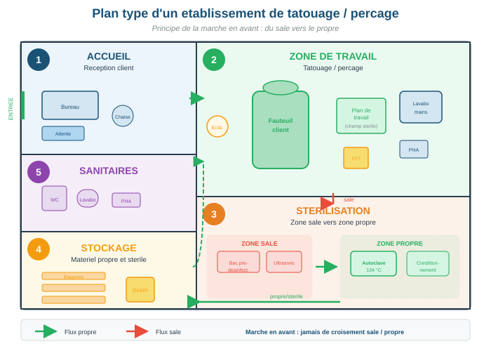

Exigences réglementaires des locaux et mobilier
Objectifs d'apprentissage
- Connaître les exigences réglementaires applicables aux locaux (R.1311-7, NF EN 17169)
- Identifier les zones fonctionnelles obligatoires et leurs caractéristiques
- Choisir des revêtements et du mobilier conformes aux normes d'hygiène
- Mettre en place les protocoles de nettoyage et de désinfection adaptés
- Connaître les affichages obligatoires exigés par l'ARS
1. Cadre réglementaire et zones fonctionnelles
L'article R.1311-7 du Code de la santé publique et la norme NF EN 17169 définissent les exigences d'aménagement des locaux. Le studio doit être organisé en zones fonctionnelles distinctes pour garantir le respect de l'hygiène.
- Zone d'accueil : espace d'attente séparé de la zone de travail, avec affichages obligatoires
- Zone de travail : espace dédié aux actes, équipé d'un lavabo à commande non manuelle (pied, coude ou capteur), séparé visuellement ou physiquement de l'accueil
- Zone de stérilisation : organisation en marche en avant (du sale vers le propre), séparée de la zone de travail. Pré-désinfection, nettoyage, conditionnement, stérilisation, stockage stérile
- Zone de stockage : rangement du matériel stérile et des consommables, à l'abri de la poussière, de l'humidité et de la lumière
- Sanitaires : WC avec lavabo accessibles aux clients, distincts de la zone de travail
Dans la zone de stérilisation, le flux de traitement du matériel doit aller du sale vers le propre, sans retour en arrière possible. Le matériel contaminé entre d'un côté, le matériel stérile sort de l'autre. Si l'espace ne permet pas une séparation physique complète, une séparation temporelle (nettoyage complet entre les étapes) est acceptable.

Pour les exigences détaillées sur l'aménagement des locaux — Annexe B — Normes applicables : consultez la norme NF EN 17169 pour les exigences détaillées sur les locaux
2. Revêtements et mobilier
Tous les matériaux de la zone de travail doivent permettre un nettoyage et une désinfection efficaces. L'objectif est d'éliminer tout support favorable à la prolifération des micro-organismes.
| Surface | Matériaux conformes | Matériaux interdits |
|---|---|---|
| Sols | PVC soudé, résine, carrelage à joints étanches | Moquette, parquet, jonc de mer, tapis |
| Murs | Peinture lessivable, panneaux stratifiés, carrelage | Papier peint non lessivable, tissu, bois brut |
| Plans de travail | Inox, Corian, surface non poreuse lisse | Bois brut, aggloméré, surfaces poreuses |
| Fauteuil/table | Revêtement vinyle ou similicuir lavable | Tissu, cuir naturel poreux |
La zone de travail doit disposer d'une ventilation adéquate (VMC, aération naturelle ou système de traitement d'air). En cas d'utilisation de produits volatils (désinfectants, encres), une ventilation renforcée est recommandée. La norme NF EN 17169 préconise un renouvellement d'air suffisant pour éviter l'accumulation de vapeurs.
3. Protocoles de nettoyage et désinfection
Le nettoyage des locaux suit une fréquence précise, adaptée au niveau de risque de chaque zone. Le principe fondamental est : nettoyer avant de désinfecter (la désinfection est inefficace sur une surface sale).
| Fréquence | Actions |
|---|---|
| Entre chaque client | Nettoyage et désinfection du plan de travail, du fauteuil, de toutes les surfaces de contact (poignées, accoudoirs, interrupteurs). Élimination des DASRI. Changement de la protection du fauteuil. |
| Quotidien | Nettoyage des sols (balayage humide + désinfection), nettoyage du lavabo et des sanitaires, vidage des poubelles DAOM, vérification des niveaux de consommables. |
| Hebdomadaire | Nettoyage approfondi des murs et surfaces verticales, nettoyage de la zone de stérilisation, vérification des stocks de matériel stérile. |
| Mensuel | Nettoyage des VMC et bouches d'aération, détartrage des robinets, nettoyage des luminaires, vérification de l'autoclave (test de Bowie-Dick, contrôle biologique). |
Tenez un registre de nettoyage daté et signé. L'ARS peut demander à le consulter lors d'une inspection. Ce registre prouve votre conformité et protège votre responsabilité en cas de plainte.
Principaux produits désinfectants
| Produit | Usage | Temps de contact |
|---|---|---|
| Détergent-désinfectant surfaces | Plans de travail, fauteuil, poignées | 5-15 min |
| Lingettes pré-imprégnées | Désinfection rapide entre clients | ≥ 1 min |
| Eau de Javel 2,6% | Sols, surfaces résistantes | 10-15 min |
| Alcool 70° | Petites surfaces lisses | 30 s |
| Détergent pré-désinfectant | Bain d'immersion matériel (étape 1 stérilisation) | 15-30 min |
Toujours nettoyer avant de désinfecter. Un désinfectant est inactif sur une surface souillée. Respectez la dilution et le temps de contact indiqués par le fabricant.
Pour le protocole de désinfection détaillé — Annexe G — Fiches de procédures : consultez la fiche G.4 — Protocole de désinfection des surfaces
4. Affichages obligatoires
L'ARS exige que certaines informations soient visibles par la clientèle dans la zone d'accueil :
- Attestation de formation hygiène et salubrité
- Déclaration d'activité auprès de l'ARS
- Informations sur les risques liés aux actes (tatouage, perçage)
- Interdiction de pratiquer sur les mineurs sans autorisation parentale
- Coordonnées de l'ARS pour signalement
- Tarifs des prestations
Étude de cas
Travaux pratiques
Objectif : Concevoir un aménagement respectant la marche en avant.
Consigne : Sur papier, dessinez le plan de votre futur établissement (ou d'un établissement fictif) en intégrant les 5 zones obligatoires : accueil, zone de travail, zone stérilisation, stockage, sanitaires. Indiquez le circuit « marche en avant » avec des flèches. Vérifiez la conformité avec les exigences de surfaces lessivables.
Durée estimée : 25 min
Objectif : Organiser l'entretien des locaux.
Consigne : Rédigez un protocole de nettoyage sous forme de checklist pour votre établissement, couvrant : les actions entre chaque client, le nettoyage quotidien, l'entretien hebdomadaire et mensuel. Précisez les produits utilisés et les temps de contact.
Durée estimée : 20 min
Glossaire du module
| Terme | Définition |
|---|---|
| Marche en avant | Principe d'organisation spatiale ou temporelle garantissant la progression du sale vers le propre, sans retour en arrière possible |
| NF EN 17169 | Norme européenne définissant les bonnes pratiques pour le tatouage, le perçage, le maquillage permanent et les modifications corporelles |
| Détergent-désinfectant | Produit combinant une action de nettoyage (détergent) et une action antimicrobienne (désinfectant), utilisé pour les surfaces et le matériel |